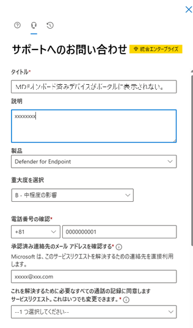

こんにちは Security & Compliance サポートチームです。
この記事では、Microsoft Defender for Endpoint (MDE) のサポートを効果的に利用するためのお問い合わせ(SR、サポートリクエスト) 発行方法についてご案内させていただきます。
本資料は、以下のようなお客様にお読みいただくことを想定しています。
- お問い合わせを起票するための契約や、お問い合わせ発行から連絡をもらえるまでの応答時間などのルールと流れを知りたい
- マイクロソフトのサポートからどのような内容を対応してもらえるのか知っておきたい
- MDE に関するお問い合わせを発行する際に、どのように起票すれば効率的に成果が得られるか知りたい
本記事の内容
お問い合わせ (SR、サポートリクエスト) の作成方法
1. お問い合わせ発行画面へのアクセス
Microsoft Defender ポータル (https://security.microsoft.com) へアクセスし、画面右上の [?] マークをクリックします。
2. 一般的な解決策の確認
「何かお困りでしょうか？」 と表示されますので、検索ボックスに問い合わせ概要を記載します。
この際に、一般的な解決策が表示されますので、お問い合わせ発行前に一度ご確認いただくことをお勧めしております。
3. 「サポートへの問い合わせ」 をクリック
画面下部の「サポートへの問い合わせ」 または画面上部の 「ヘッドセット」 マークをクリックします。
4. お問い合わせ内容の入力
「サポートへのお問い合わせ」 画面が表示されますので、問い合わせ内容等を入力します。
ここでは各項目ごとに留意事項を記載します。


① タイトル
「2. 一般的な解決策の確認」 で記載した問い合わせ概要が自動入力されます。
お問い合わせ発行後、本画面で記載したタイトルを件名としたメールを弊社よりお送りいたしますので、件名にご希望等がございましたら、適宜編集いただけますと幸いです。
起票の単位
サポートをご利用いただく際には、問題の最小単位を切りだしたものを 1 件としてお問合せください。
これは、お問合せの量に応じて適切なサポート人員を配置し、また必要に応じて複数人での対応によりスピーディなご連絡を差し上げるためであり、弊社サポートサービスを利用される皆様にお願いさせて頂いております。
分割いただくことが適切な例は以下の通りです。
- 同じ環境で問題が発生しているが、発生パターンが異なるなど同じ原因によるものか不明な場合
- お問い合わせの過程で、関連した追加質問が発生したが元のお問い合わせ内容と異なる場合
- 1つのご質問について、各プラットフォーム (Windows、Linux、macOS、Android、iOS) 毎の見解を希望される場合
② 説明
お問い合わせ詳細について記載してください。
トラブルシューティングの対応を希望される場合は、以下を参考に記載いただきますようお願いいたします。
| 項目 | 詳細 |
|---|---|
| 発生している問題について | 障害発生に伴うエラーの有無 (エラー画面等のスクリーンショットが取得できる場合は可能な限り添付してください。) |
| 事象の再現手順 | ・問題発生に至った経緯や障害の再現方法 ・事象開始日時や発生頻度 |
| 問題発生前の変更有無 | 問題発生前に弊社製品やハードウェア、設定等の変更を加えている場合は可能な限り詳細を記載 |
| 事象発生スコープ | 以下の観点で事象の情報整理を行い、可能な範囲で発生台数やスコープを記載 ・OS 情報 (クライアント or サーバーOS、バージョン、エディション等) ・該当マシン情報 (機種名、モデル等) ・お問い合わせ製品情報 (製品名、バージョン等) |
| 実施済みの対処策 | お客様にてお試しいただいた対策や、実施された調査内容、既知の回避策の有無 |
| 業務影響 | 本お問い合わせに伴う業務影響の有無や具体的な業務影響内容 |
| 関連SR番号 | (既に他のサポートリクエストを起票済みの場合は) 関連するお問い合わせ番号 |
お問い合わせ時には機密情報を記載しないようにお願いいたします。
- これはお問い合わせ起票時以外にも、お問い合わせ最中 (弊社とのメールのやり取りでの本文内への記載、添付ファイル内での記載等) も含めてのお願いとなりますことをご理解頂けますと幸いです。
- 機密情報が含まれる場合、当該箇所をマスクしていただくようお願い申し上げます。
- もし、お客様側より以下のような機密情報を記載されてしまった際は、弊社よりお客様へご連絡の上、弊社およびお客様側で当該情報の削除の対応や、場合によっては新規のお問い合わせ発行をお願いさせていただくといったお手間をおかけする可能性があります。
- 記載してはいけない機密情報の例:
・各種ポータルや OS 等へアクセスするためのパスワード
・クレジットカード番号
・MDE オンボードスクリプト (お客様テナントに紐付く貴重な情報が含まれております。)
③ 製品
Microsoft Defender for Endpoint (MDE) または Microsoft Defender ウイルス対策(MDAV) に関するお問い合わせの際には 「Defender for Endpoint」 を選択して下さい。
④ 重大度を選択
問題の状況によって、3 種類の重大度が設定可能です。
お客様がご利用されている契約と、重大度に応じて、初回応答時間が設定されています。
初回応答時間は、お問い合わせ起票後から Microsoft のサポートエンジニアがお客様と連絡を取り、サポートが開始されるまでの時間です。重大度 A 以外は営業時間内 (日本では午前9:00～午後17:30) でのご連絡となります。
- 事業に軽微な影響が及ぶ場合 (重大度 C): Standard サポート契約の場合 8 時間以内
- 事業に部分的な影響が発生する場合 (重大度 B): Standard サポート契約の場合 4 時間以内
- 事業に大きな影響が発生する場合 (重大度 A): Standard サポート契約の場合 1 時間以内
詳しくは、サポート プラン—サポート内容と応答性 のページを参照してください。
平日の夜間と休日も含めた 24x7 (24 時間体制) でのご支援であり、具体的には以下のような即時の対応が必要な場面での利用を想定しております。
- 原則として、事業が停止しているような危機的障害 (例 : 全社的に重要なシステムダウンが発生、重要な業務アプリケーションへのアクセスに失敗、など) からの復旧を目指したサポートとなります。
このため、以下のような場合は重要度 B 以下を選択してください。- 復旧済みの問題についての原因の調査
- 環境の構築中やこれまでと異なる設定への変更に伴う問題発生で切り戻しによって解消可能
- プロジェクトの進捗に影響が出ているので対応の加速を希望
- また、即時の情報提供などが必要なため、お客様にも常にお電話でのご連絡がつく体制の維持をお願いしております。
- 障害からの復旧後には、お客様とのご相談の上で重要度を変更 (緊急対応の解除)させていただきます。
<対応中の案件の緊急度 を A (24x7 対応) に上昇させたい場合>
お問い合わせの件について緊急性が上昇した結果、重要度を A に変更されたい場合には、お手数ですが別途新規に重要度 A のお問い合わせの起票をお願いいたします。
新規のお問合せを起票いただくことで、そのタイミングの緊急対応担当へ呼び出しが行われます。
その際、既存のお問い合わせのお問合せ番号を文中に記載いただくことで、関連のお問い合わせの経緯も参考にしつつ対応します。
⑤ 電話番号の確認
お問い合わせ担当者様のお電話番号および国番号(日本: 81) を入力します。
ご希望の連絡先として 「メール」 を選択いただいた場合も、状況確認等を目的に弊社からのお電話を差し上げる場合がございます。
もし電話対応を希望されない場合は、その旨を 「②説明」 内に記載いただけますと幸いです。
⑥ 承認済み連絡先のメールアドレスを確認する
ご連絡を希望されるメールアドレスを記入してください。
複数のメールアドレスの場合は、セミコロン “;” を使用して区切ることができます。
⑦ これを解決するために必要なすべての通話の記録に同意します
お問い合わせに対する通話で収集された情報のレコーディングや監視に同意いただける場合、「はい」 を選択します。
⑧ 希望する連絡方法
「メール」 か 「携帯電話」、ご希望の連絡方法をご選択ください。選択した方法で初回のご連絡をさせていただきます。
なお、2 回目以降のご連絡はサポートエンジニアが状況に応じて異なるご連絡方法のお願いをさせて頂く場合がございます。
もし、より細かいご要望がございましたら、「② 説明」 欄にご記入いただきますようお願いいたします。
緊急度 A については電話のみでの対応となります。
⑨ 添付ファイル
エラーメッセージのスクリーンショット等、添付ファイルがございましたらアップロードいただきますようお願いいたします。
添付ファイルは最大 10 GB (ファイル辺り 1GB、上限 10 ファイル) まで送信できます。
なお、1GB以上のファイルの共有を希望される場合、お問い合わせ時にお知らせいただけましたら、弊社よりアップロードサイト (1ファイルあたり100GBまで格納可能) のリンクを送付いたします。
⑩ 地域の設定
・新しいタイムゾーンの選択: 日本の場合 「(UTC+09:00) 大阪、札幌、東京」 を選択します。
・第2言語の選択: 対応を希望される言語を選択します。
日本語以外の言語での対応をご要望の場合は、お問い合わせ本文等についてもすべて対応希望言語での記載をお願いいたします。
⑪ ユーザー補助の設定
ユーザー補助関連のニーズがございましたら、本項目に記載いただきますようお願いいたします。
入力項目は以上の通りです。
上述の ①～⑪ までを入力し、「連絡を希望する」 を選択した後、初回応答時間内に、サポートエンジニアからのご連絡を差し上げます。
お問い合わせの完了 (サポート リクエストのクローズ)
お問い合わせの終了方法について
弊社のサポート エンジニアからの回答によって、お問い合わせに記載頂いた問題が解決した場合や、お客様ご自身で問題が解決した場合は、解決した旨をメール、お電話にてご連絡頂きますようお願い致します。
その後、弊社のサポート エンジニアにてお問い合わせ対応の終了 (クローズ) を実施します。
解決した旨のご連絡等、対応終了 (クローズ) をご承諾いただくご連絡が無い場合、担当エンジニアから継続してご連絡させていただくことになり、お手を煩わせることもございます。そのため、お手数ではございますが、対応終了をご承諾いただくご一報をいただけますと大変助かります。
また、弊社からの状況確認のご連絡を複数回実施し、お客様からご連絡を頂けなかった場合は、弊社のサポート エンジニアにてお問い合わせを対応終了のステータスとさせていただくことがあります。
サポート リクエストのクローズ後のアンケートについて
サポートリクエストをクローズ時にメールでアンケートを送付しています。
サポート対応の品質向上を目的として、各サポート リクエストでのサポート エンジニアによる対応品質をお客様にご評価いただいております。
回答内容については担当したサポート エンジニアならびに担当チームメンバーで共有し、次回以降のより良い対応に繋げたり、励みとさせていただいております。
製品へのフィードバックや機能追加の要望
Microsoft Defender における製品自体の品質のフィードバック、機能追加・変更といったご要望については、Microsoft Defender ポータル上の 「フィードバック」 にて送信することができます。
以下の手順で Microsoft へのフィードバックを投稿していただくことで、開発部門に直接お声を届けることが可能となっています。
ご参考: https://learn.microsoft.com/ja-jp/defender-xdr/feedback
- Microsoft Defender ポータルを開き、画面右上のフィードバックボタンを選択します。
- Microsoft Defender のエクスペリエンスについて評価を行い、機能要望等につきまして可能な限り詳細を投稿いただくようお願いいたします。必要に応じて、Microsoft Defender ポータル上のスクリーンショットを含めることもできます。
- 海外の開発チームが直接確認いたしますため、英語にてフィードバックを記載いただくことでご要望の内容がより正確に伝わることが期待されますので、お手数ですがご検討くださいますと幸いです。
- フィードバックいただいた上で弊社開発部門が実装可否や改善可否の検討をさせていただいており、実現のお約束は出来かねる内容となります。
また、ご実施いただきましたフィードバックの確認結果や進捗状況については、本サポート窓口にお問い合わせいただきましてもご案内ができかねますこと、予めご理解くださいますようお願い申し上げます。
サポートと機能要望の違いについて
弊社サポートでは、現在進行形の問題に対して対処を行い、製品を使い続けられるような支援を行うことに注力しており、中・長期的に見た機能改善や追加のご要望、一過性の問題に対しての修正完了までの追跡はサポートでは行っておりません。上記フィードバック サイトでは、製品がより良くなるようなご要望について、その賛同意見や技術的な実現正とメリットを考え、今後の開発ロードマップに活かすべく開発者が直接参照しておりますので、ぜひとも積極的に投稿をお願いいたします。
なお、このような機能改善へのご要望について、中・長期的ではあっても、お客様にとって Microsoft Defender for Endpoint を継続利用するにあたって極めて大きな障壁となるようでしたら、プレミア サポートの契約をいただいている場合、担当の CSAM (カスタマー サクセス アカウント マネージャー) までご連絡をお願いします。
以上が弊社サポートサービスを効果的にご利用いただくためのお問い合わせ方法、および流れとなります。
なお、本ブログに記載しました内容はあくまで 「一般的なお問合せの流れ」 をご紹介していますので、もしこちらに記載がなくお悩みの点がございましたら、一旦お問合せを起票いただくか、既に対応させていただいている件があればそちらの担当サポートエンジニアまで、お気兼ねなくご相談ください。
Microsoft Defender for Endpoint をサポートサービスの質でお選び頂けるよう、チーム一同努めてまいりますので、これからも、弊社製品ならびにサポートサービスをご愛顧賜りますと幸いです。
※本情報の内容（添付文書、リンク先などを含む）は、作成日時点でのものであり、予告なく変更される場合があります。